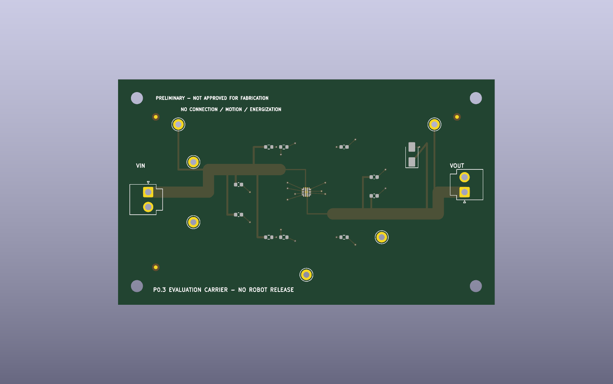

What changed
Rule correction
P0.2 allowed a 0.05 mm soldermask dam in native DRC. P0.3 enforces 0.10 mm, matching the screened provider's published minimum.
Registration
Three 1.0 mm copper / 2.0 mm mask global fiducials are encoded. Panel and local-fiducial requirements remain a provider question.
Fail closed
0 uploads · 0 quotes · 0 orders · 0 articles · 0 tests · 0 approvals
Provider screen
Published capability is a screening input, not acceptance. At-limit mask geometry, compound paste apertures, exact stackup, materials and inspection deliverables require written disposition.
24 capability rows · primary-source register · native board metrics
Controlled inquiry
24 blocking DFM questions · hash-bound proposed submission files · 18 blank first-article checks · denial state
Native candidate


KiCad project · KiCad PCB · ERC · DRC